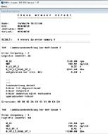
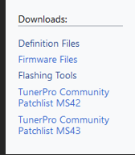
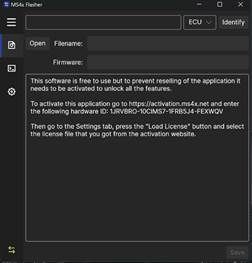

Frankie Deleon
IS-4543-ON1
Milestone 1
Idea – Recode BMW car data to enable/disable different features. Can also expand further to create an environment for engine tuning.
Milestone 1: Install needed software tools such as INPA, NCSExpert, Ms4xFlasher, and TunerPro then set up a proper environment to accept data from the vehicles ECU.
Summary of Activities
Creating an environment for tuning and diagnostics for any vehicle can seem like a daunting task if one does not understand the system they are dealing with. Like computers, cars need to communicate using a processor located in the Electrical Control Unit (ECU), which communicates to different modules that can be seen as a network topology. To begin understanding these modules and how we can analyze and manipulate them we need to download and configure our software to synchronize with our hardware.
Integrated National Processing Access or INPA is the first program needed to begin communication with the vehicles ECU. While it may seem simple to just download the program and begin using it, most people do not make it past this step simply because the download files for INPA are no longer publicly available and one’s computer must be configured to communicate with the OBD-II port. While hidden, the download can still be found on various forums throughout the internet. I would not trust anyone who is selling this software as it is illegal for the unofficial distribution of the software. The BMW Standard tools suite being used today will include INPA and its related apps, once INPA is configured correctly by copying, replacing files, and configuring ports, it can then connect to the BMW’s ECU via K-DCAN cable. To confirm connection, we read the fault codes on the vehicles ECU and examined the results. With INPA and the ports configured correctly, we now can proceed to download and setup the flashing and tuning environment for the MS4X ecu series that is used by the e46 chassis for BMW developed from 2001-2005. To complete the installation of MS4XFlasher, an activation code must be entered on the MS4xWiki, and a license file will be created, and loaded to the Ms4xFlasher application. Once the application is successfully loaded with its hardware license, the ECU’s files can now be read and flashed back to the car as needed and loaded to TunerPro to begin manipulation of the vehicle’s engine parameters.
Description of Learning Completed
To begin coding and enabling/disabling features on BMW vehicles we must understand the software and hardware being used to communicate with the vehicle. Integrated National Processing Access (INPA) is a BMW factory software developed as a diagnostic interpreter program for communicating with the vehicles Electrical Control Unit (ECU) through the Electronic Diagnostic Base System (EDIABAS). EDIABAS functions as an interface layer which translates commands from the diagnostic tools into a format that the vehicles ECU can understand. This handles BMW’s communication protocols such as K-line or CAN bus which are used in newer vehicles. When viewing these tools as a Network Administrator we can view INPA as a network management software such as Wireshark where the ECU acts as the cars network communicating through K-line to the networks physical layer through the EDIABAS to view the status of the vehicle’s modules. A K-DCAN cable will be needed to connect to the vehicles OBD-II port under the steering wheel to a computer using INPA to analyze and begin to manipulate the vehicles network using other software. The K-line support is used in older BMW models typically used before 2007, while a Dual-Wire Controller Area Network (DCAN) supports cars post 2007. Using INPA and a K-DCAN cable as a base, we can now begin installing software such as NCSExpert, MS4x flasher, and TunerPro to begin creating an environment for complete BMW diagnostic and tuning capabilities. For the first milestone we will begin by installing these programs in an environment for them to communicate with each other and configure the computer to connect with the vehicles EDIABAS and ECU via ODB2 using a K-DCAN cable. INPA needs to be downloaded and configured correctly to be able to communicate with the vehicles ECU. After the zip for BMW Standard Tools suite is extracted, we can run the setup exe file, St212.exe and configure the files by replacing folders, copying files to the syswow64 folder, and running commands in command prompt to activate the ActiveX controls, which tells windows where to find a necessary file so that the programs that rely on it can use it. This completes the installation of INPA and its standard tool apps such as NCSExpert, NCSDummy, Tool32, and WinKPF. To configure the port connection through USB, the COM port needs to be changed to 1, and the latency needs to be changed to 1. The reason for this change is due to compatibility and stability concerns with older software tools such as BMW Standard Tools which was created in the early 2000’s. COM1 ensures better compatibility with the legacy BMW software and setting the latency to 1 ms ensures a fast and smooth connection with the vehicles ECU. To have complete control over the e46 series BMW being used in this example, we can now download MS4X Flasher and TunerPro. This two software’s will allow us to fully or partially read the BMW’s ECU data, extract the file, and modify the file using TunerPro to allow the user full customization over the engine’s parameters. This can be extremely dangerous and only recommended to be used by professionals or people who are willing to risk completely bricking the ECU, making it unusable without a complete file reconstruction, which is also possible to do using MS4X Flasher and loading a clean software file corresponding with the vehicle’s vin number.
Documentation of Work Completed
Before any downloads are made a K-DCAN cable is needed to ensure connection to both pre/post 2007 vehicles. When purchasing make sure the cable comes with the switch between K-CAN and K-DCAN which will physically route the communication through specific pins on the OBD-II connector to allow for connection between most vehicles. In K-line mode, the switch connect pin 7 (K-line) while leaving CAN bus pins 6 and 14 inactive. In D-CAN mode the switch disconnects pin 7 and connects CAN high and CAN low with pins 6 and 14 to enable CAN bus communication.
Below are screenshots of the location of the OBD-II port and the correct K-DCAN USB Interface cable.
The package I am using for this demonstration is the BMW Standard Tools suite which includes applications such as INPA, NCSExpert, NCSDummy, Tool32, and WinKPF. NCSExpert will be used to communicate with INPA to allow for manipulation of the vehicle’s module files, which allows for the “coding” portion where lines of code are changed to achieve your desired outcome, such as euro headlights configuration. Since all of BMW’s code is in German, NCSDummy will help translate and specify what rule you are trying to change. Tool32 is an advanced ECU command and control tool which is used to change or force specific settings or parameters which is outside the scope of this demonstration. WinKFP is BMW’ s tool for programming or flashing ECUs with new firmware or software. Here is the download link: https://drive.google.com/drive/folders/1NbTWEZPhMZL3vrzKuqVEIj26nEZ_cwFV?usp=drive_link
1. To begin the installation of the Standard Tools suite we
must extract the files and run St212.exe using all default settings except the
4 checkbox options in the "select additional task" window regarding
"backup and restore" and "create desktop/quick launch icons”.
(If using Windows 10, run in st212.exe in "Compatibility Mode" for
Windows 7)
After install completes, select "No" to
restarting PC.
3. Navigate to your C:\ drive and delete the folders labeled "EC-APPS,
EDIABAS & NCSEXPER"
4. Replace those folders with the "EC-APPS, EDIABAS & NCSEXPER"
from this download by copying them to the C:\ drive.
5. Copy the 3 files inside the OCX folder and paste them in the
C:\Windows\Syswow64 folder. If you do not have this folder, you are a 32-bit
system meaning you need to paste them in C:\Windows\system32 instead.
6. Open Command Prompt as administrator & enter the following commands.
Please note if your 32bit system, start on the 2nd line: If you have issues
getting the commands to succeed, make sure your running command prompt as
administrator.
cd c:\windows\syswow64 – Change to correct directory.
(Press Enter)
regsvr32 mscomctl.ocx – Register ActiveX controls.
(Press Enter & wait for "Registration Succeeded" message)
regsvr32 msflxgrd.ocx
(Press Enter & wait for "Registration Succeeded" message)
regsvr32 comdlg32.ocx
(Press Enter & wait for "Registration Succeeded" message)
By activating the ActiveX controls, it is telling windows where to find a
necessary file so that the programs that rely on it can use it.
7. Place the "BMW Tools" folder (BMW icon) on your desktop. Shortcuts
to all the software are inside.
8. Make sure your cable is set to COM-1 with a Latency Timer as 1 in device
manager. It is default set to COM-3 with 16 for the Latency Timer.
9. Reboot Computer.
10. Installation is complete.
To make sure INPA is working correctly we can connect to the car via USB using the K-DCAN cable and begin analyzing its data.
Once INPA is running with the K_DCAN connected to the vehicles ODB-II port, INPA should show Cable Detected: Yes, and Ignition: on to indicate the key position is on.
Now we can select the vehicle which we are scanning. In this example I am connected to a 2002 BMW 330i, also known as an e46 by chassis number. As shown shift + F7 will open the E46 option. This car model has an MS43 ECU with a M54b30 engine so the Script that must be selected is the MS 43.0 for M54 option, as shown below.

The main menu will give you many diagnostic options, for this example we will simply scan the fault codes on the car by selecting <F4> Error memory.

Select <F1> to Read Error Memory then the faults will be shown as seen in the screenshot above. Since BMW is a German company, their program outputs its information in German. As we can see this vehicle has 9 errors in error memory and it shows all information regarding when the fault was triggered such as RPM, Mass Air Flow, and Voltage.
INPA is just the framework that allows our other programs such as NCSExpert and WinKPF to communicate with different modules in the vehicles ECU. Ms4xFlasher, and TunerPro are tuning environments that were created to read, flash, and tune the Ms4x series ECUs that I am using in this example.
MS4X Wiki is a website that can be referred to for all questions regarding the MS4X ECU platform for BMW’s. Here we can download MS4XFlasher and TunerPro, these programs will be used in future examples to understand how an engine can begin to be tuned and have every parameter of its engine changed.

To install MS4X flasher, an Activation code is needed. Download the MS4XFlasher download from the Wiki, and an Activation code will be shown when un activated. Using the MS4X activation tab shown on the wiki, copy and paste the activation code to https://activation.ms4x.net/ and load the license in the MS4x Flasher settings as shown in the screenshots below. *A hardware license will not be created unless the K-DCAN cable is connected to the car*

*Store the license somewhere other than the download folder for better practice*
Once MS4x is activated, TunerPro is a standalone editing software that will be used to manipulate the files read using MS4xFlasher which will read and write files. This combination of diagnostic, flashing, coding, and tuning tools create the framework that is used to build and modify a race car, or a daily driver vehicle to your customized preference. Whether you prefer 2 beeps instead of 3 for your seat belt, or if your race car no longer uses the factory seat options, these settings can be manipulated using the software installed today.
References
Main page. MS4X Wiki. (n.d.). https://www.ms4x.net/index.php?title=Main_Page
MaxxECU. (n.d.-b). MaxxECU online help. BMW INPA diagnostic tool (GEN1). https://www.maxxecu.com/webhelp/advanced-bmw_dct-bmw_inpa_tool.html